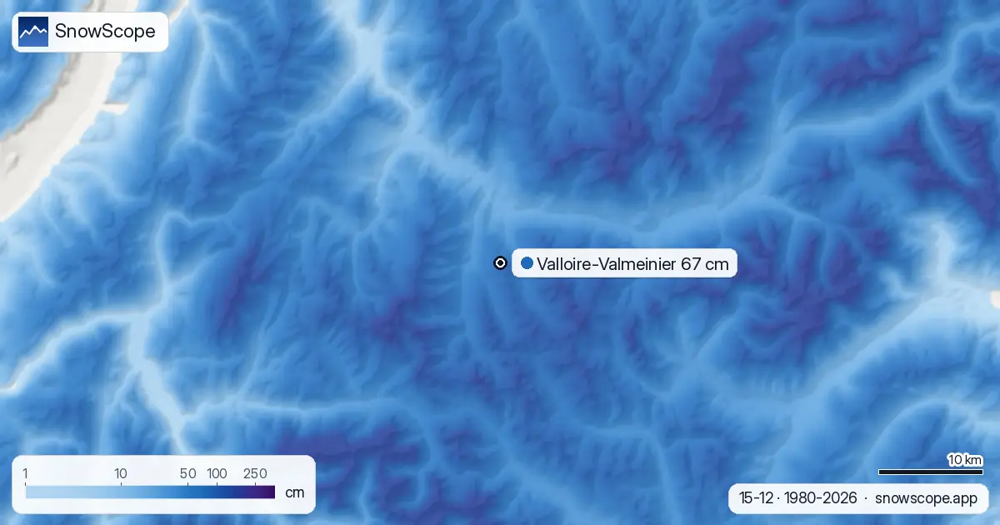

Probabilidades de nieve y precios en Valloire-Valmeinier en diciembre
Si estás planeando un viaje de esquí a Valloire-Valmeinier este diciembre, las probabilidades de nieve dependen mucho de la semana que elijas. Nuestra historia de nieve de 46 inviernos pasados muestra que, aunque la base puede ser escasa al principio, las cotas altas son muy fiables. A mediados de diciembre, la zona de media montaña tiene un 98 % de probabilidad de contar con al menos 30 cm de nieve.
Consulta la previsión de nieve en tiempo real de Valloire-Valmeinier en la app SnowScopeEspesor de nieve, alertas de nieve polvo y mapa 3D, gratis.Probabilidades semanales de nieve en la base
En la base de los remontes, situados a 1406 m, la primera semana de diciembre suele ser escasa. En nuestra historia de nieve, solo el 26 % de los inviernos pasados tuvieron al menos 30 cm de nieve durante la primera semana. Esta probabilidad aumenta a medida que avanza el mes. Para la segunda semana, la posibilidad de tener 30 cm en la base sube al 43 %, y alcanza el 50 % entre el 15 y el 21 de diciembre. Para la semana de Navidad, las probabilidades mejoran hasta el 65 %.
Si buscas una base más profunda de 50 cm o más a 1406 m, las cifras son mucho menores. En la primera semana de diciembre, esto solo ha ocurrido en el 2 % de los inviernos pasados. Para la última semana del mes, la probabilidad de una base de 50 cm sigue siendo solo del 30 %. La nieve suele empezar a mantenerse en el suelo a esta altura alrededor del 22 de octubre, y el espesor habitual el 15 de diciembre es de 29 cm.

Fiabilidad en media montaña y en la cima
La situación cambia significativamente cuando subes más arriba en la montaña. A media montaña, que está a 2072 m, el espesor habitual en diciembre es de 66 cm. En la primera semana del mes, hay un 76 % de probabilidad de tener al menos 30 cm de nieve. Para la segunda semana, esto sube al 87 %, lo que supone unos 9 inviernos de cada 10. Durante el resto del mes, la probabilidad es del 98 %, es decir, casi todos los inviernos.
En la cima de los remontes, que alcanzan los 2738 m, la nieve es muy fiable desde el principio del mes. Hay un 98 % de probabilidad de tener 30 cm en la primera semana, y en todos los inviernos desde 1980-81, ha habido al menos 30 cm a partir del 8 de diciembre. El espesor habitual en la cima el 15 de diciembre es de 123 cm, y el pico habitual de la temporada a esta altura es de 300 cm.
Relación calidad-precio en las pistas
El área de esquí cartografiada cuenta con 131 km de pistas y 34 remontes, con un desnivel de 1332 m. Para quienes visiten la estación al principio, hay un precio especial para el fin de semana de apertura del 5 al 6 de diciembre de 2026. Un forfait con acceso a la pista de hielo cuesta 20 EUR. Es un coste muy bajo para un fin de semana de esquí si llega la nieve temprana.
Para el resto de la temporada, un forfait de adulto de 1 día Galibier-Thabor cuesta 54,90 EUR a la tarifa estándar. Si te quedas una semana completa, el forfait de adulto de 6 días Galibier-Thabor cuesta 278,50 EUR. Estos precios son del sitio oficial para la temporada de invierno 2026-27 y ofrecen acceso a toda el área conectada entre Valloire y Valmeinier.
Comparativa entre Valloire y Serre Chevalier
Al sur de Valloire-Valmeinier, Serre Chevalier es una estación más grande con 157 km de pistas y 70 remontes. Aunque Serre Chevalier tiene más desnivel con 1546 m, Valloire-Valmeinier suele tener nieve más profunda en sus cotas clave. A media montaña, Valloire (2072 m) tiene un espesor habitual en diciembre de 66 cm, mientras que Serre Chevalier (1992 m) suele tener 58 cm. En la cima de los remontes, Valloire (2738 m) registra un espesor habitual de 126 cm frente a los 111 cm de Serre Chevalier (2765 m).
La probabilidad de tener 50 cm o más a media montaña en la tercera semana de diciembre es del 80 % en Valloire, pero solo del 59 % en Serre Chevalier. Los precios también difieren durante el periodo vacacional. Un forfait de 6 días en Serre Chevalier cuesta 276,00 EUR antes del 18 de diciembre, pero sube a 345,00 EUR del 19 de diciembre al 1 de enero. En comparación, el forfait de 6 días de Valloire cuesta 278,50 EUR para el mismo periodo.
Tendencias históricas y condiciones actuales
Nuestra historia de nieve de 46 inviernos pasados muestra que los espesores de nieve en diciembre han aumentado generalmente. En los primeros 15 inviernos de nuestros registros, desde 1980-81 hasta 1994-95, la media montaña tuvo una media de 55 cm en diciembre. En los últimos 15 inviernos, desde 2011-12 hasta 2025-26, esa media subió a 69 cm. En la cima de los remontes, la media aumentó de 106 cm a 129 cm entre esos dos periodos. En un invierno habitual, hay 226 días de nieve a media montaña.
El 13 de noviembre de 2026, la estimación actual de nieve muestra 0 cm en la base y a media montaña, con 16 cm en la cima. Se prevé que los próximos 7 días traigan 22 cm de nieve nueva a la base, 58 cm a media montaña y 82 cm a la cima. Entre el 13 de noviembre y el 26 de noviembre de 2026, las perspectivas para dos semanas a media montaña y por encima sugieren un rango de 69 cm a 99 cm de nieve nueva, con una estimación intermedia de 84 cm.
Consejos para esquiadores
- Reserva para la semana del 22 al 28 de diciembre si quieres la mejor probabilidad de nieve en la base de 1406 m, que tiene un 65 % de probabilidad de tener 30 cm.
- Céntrate en esquiar por encima de los 2072 m, donde hay un 98 % de probabilidad de tener 30 cm de espesor de nieve a partir del 15 de diciembre.
- Compra el forfait de adulto de 6 días Galibier-Thabor por 278,50 EUR en el sitio oficial para cubrir los 131 km de pistas.
- Consulta siempre el boletín de aludes antes de plantearte cualquier tipo de esquí fuera de pista, especialmente cuando el espesor en la cima alcance sus habituales 123 cm.
Más mapas (sitios externos)
Referencias y créditos
- Valloire, official ski pass shop (Galibier-Thabor), winter 2026-27 skipass.valloire.com/fr/
- Serre Chevalier, official booking site, ski passes 2026-27 reservation.serre-chevalier.com/achetez-vos-ski-pass-serre-chevalier-et-autres-prestations.html
- SnowScope, December snow at three heights and today's snow map snowscope.app/
Sobre estas cifras
Cifras de nieve: histórico de nieve de SnowScope, 46 inviernos pasados (1980-81 a 2025-26) a tres alturas de cada estación (un modelo del pasado corregido por altitud: una estimación para una zona, no mediciones de la estación); cifras de diciembre calculadas con los espesores diarios de esos inviernos. Nieve actual y tendencia a dos semanas: previsiones de SnowScope (tendencia de ECMWF y GFS, un rango, no una promesa). Remontes y pistas: cartografía de OpenSkiMap. Precios: las páginas oficiales de abajo, consultadas el 2026-11-13; los precios pueden cambiar, compruébalos antes de reservar.
Boletines oficiales de aludes: Météo-France – Bulletin d'estimation du risque d'avalanche
Citar este informe
Para investigación, docencia o prensa: cifras y gráficos reutilizables libremente bajo CC BY 4.0 con esta cita.
SnowScope (2026), Probabilidades de nieve y precios en Valloire-Valmeinier en diciembre, https://snowscope.app/blog/es/2026/11/valloire-valmeinier-december-snow-odds-value-2026.html, consultado el 2026-11-14
SnowScope (Atlas Labs). (2026, November 14). Probabilidades de nieve y precios en Valloire-Valmeinier en diciembre. SnowScope snow reports. https://snowscope.app/blog/es/2026/11/valloire-valmeinier-december-snow-odds-value-2026.html
BibTeX
@misc{snowscope2026valloirevalmeinierdecemb,
author = {{SnowScope (Atlas Labs)}},
title = {Probabilidades de nieve y precios en Valloire-Valmeinier en diciembre},
year = {2026},
month = nov,
howpublished = {\url{https://snowscope.app/blog/es/2026/11/valloire-valmeinier-december-snow-odds-value-2026.html}},
note = {Published 2026-11-14 13:29 UTC; accessed 2026-11-14}
}· CC BY 4.0 · Métodos, datos y herramientas →
Sigue Valloire-Valmeinier
Gratis: un aviso cuando llega la nieve y la previsión cada mañana.
Más partes de nieve

Esquiar en Kühtai en diciembre: 60 cm en la base (1939 m) un 15 de diciembre típico y forfait de 6 días en temporada baja a 269 EUR hasta el 18 de diciembre.

Glaciar de Hintertux en diciembre: 98 cm a 3245 m y 52 cm a media montaña un 15 de diciembre típico; forfait de día 82 EUR, 6 días 399 EUR.

Grimentz-Zinal ofrece 71 km de pistas y nieve fiable en altura para tu viaje de diciembre, con pases de 6 días a CHF 339,00.